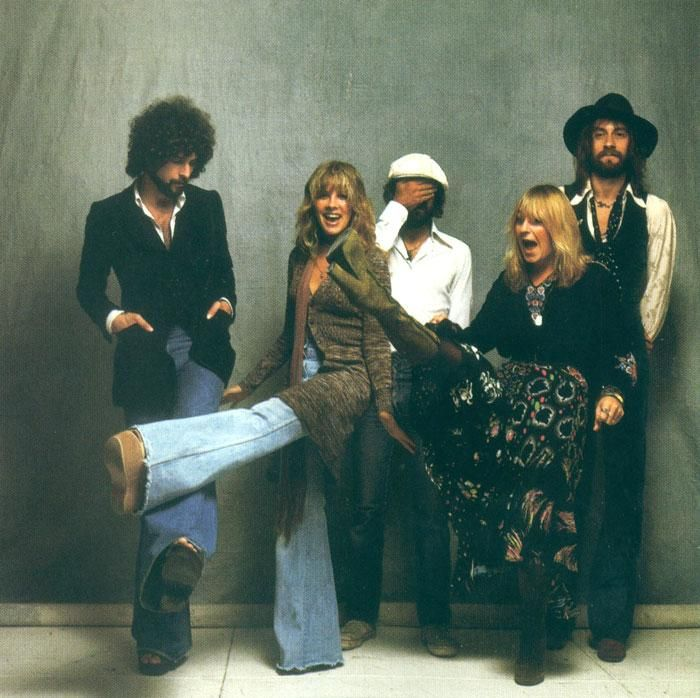

Fleetwood Mac
Fleetwood Mac has always reminded me of my mom — their music feels like stepping into a different timeline where school, work, and money just don't exist. There's something about it that makes me feel completely free. The Rumours era is my favorite, with its raw emotion and timeless sound that never gets old.
One of my favorite memories is going to a Stevie Nicks concert with my mom and sister. It was one of those nights that felt almost surreal — like the music was made to be experienced exactly like that, together.
Essential Fleetwood Mac (my picks)
Here are my personal picks organized by era — the songs and albums I keep coming back to.
-
Early Years
- Mystery to Me — an underrated gem that doesn't get enough credit
- Oh Well — a Peter Green classic that shows where it all began
-
Rumours Era (the peak)
- Rumours — the album I could listen to start to finish on repeat
- Dreams — effortlessly cool, Stevie at her best
- Rhiannon — feels like a spell every single time
-
Timeless favorites
- Landslide — the one that hits differently depending on where you are in life
- Gypsy — nostalgic and free, exactly how their music makes me feel
The Classic Lineup
The Rumours lineup: Lindsey Buckingham, Stevie Nicks, Mick Fleetwood, Christine McVie, and John McVie — the five people who created the album that never leaves my playlist.

Live performance
If I could go to any concert, it'd be this one:
Fleetwood Mac by the numbers
Everything you need to know about Fleetwood Mac's success.